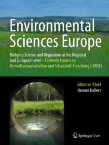

<!-- ====================================================================== -->
        <!-- >>> [START] JOURNAL PAPER 1 (Published • Q1 Journal • 2nd Author)      -->
        <!-- Title: Spatially Explicit Framework for Evaluating Biodiversity Risk   -->
        <!-- Journal: Environmental Sciences Europe (Springer Nature)               -->
        <!-- DOI: https://doi.org/10.1186/s12302-026-01490-w                        -->
        <!-- ====================================================================== -->

        <style>
          /* Scoped Motion Carousel & Insights Styles for Journal 1 */
          .j1-carousel-view {
            position: relative;
            width: 100%;
            height: 100%;
            min-height: 280px;
            background-color: #0b1329;
            overflow: hidden;
          }

          .j1-slide-img {
            position: absolute;
            inset: 0;
            width: 100%;
            height: 100%;
            object-fit: contain;
            background-color: #0b1329;
            opacity: 0;
            transform: scale(1.02);
            transition: opacity 0.8s ease-in-out, transform 1.2s ease-in-out;
          }

          .j1-slide-img.active {
            opacity: 1;
            transform: scale(1);
          }

          .j1-caption-pill {
            position: absolute;
            bottom: 0.65rem;
            left: 0.65rem;
            right: 0.65rem;
            background: rgba(15, 23, 42, 0.88);
            backdrop-filter: blur(8px);
            -webkit-backdrop-filter: blur(8px);
            border: 1px solid rgba(255, 255, 255, 0.15);
            border-radius: 6px;
            padding: 0.4rem 0.65rem;
            color: #ffffff;
            display: flex;
            align-items: center;
            justify-content: space-between;
            z-index: 5;
          }

          .j1-caption-text {
            font-size: 0.73rem;
            font-weight: 600;
            color: #e2e8f0;
            white-space: nowrap;
            overflow: hidden;
            text-overflow: ellipsis;
            max-width: 170px;
          }

          .j1-dots {
            display: flex;
            gap: 0.3rem;
            align-items: center;
          }

          .j1-dot {
            width: 14px;
            height: 4px;
            background: rgba(255, 255, 255, 0.35);
            border-radius: 2px;
            cursor: pointer;
            transition: all 0.3s ease;
          }

          .j1-dot.active {
            background: #38bdf8;
            width: 22px;
          }

          /* Equal Contribution Badge Typography */
          .badge-author-highlight {
            background: #eff6ff;
            color: #1e3a8a;
            border: 1px solid #bfdbfe;
            display: inline-flex;
            align-items: center;
            gap: 0.35rem;
          }

          .badge-author-highlight .main-rank {
            font-weight: 800;
            font-size: 0.76rem;
            color: #1d4ed8;
          }

          .badge-author-highlight .equal-contrib {
            font-size: 0.66rem;
            font-weight: 500;
            color: #64748b;
            text-transform: none;
            letter-spacing: normal;
          }

          /* Interactive Insights Drawer */
          .j1-insights-panel {
            max-height: 0;
            overflow: hidden;
            transition: max-height 0.45s ease-in-out, opacity 0.35s ease, margin 0.35s ease;
            opacity: 0;
            margin-top: 0;
            background: #f8fafc;
            border-radius: 8px;
            border: 1px solid transparent;
          }

          .j1-insights-panel.open {
            max-height: 520px;
            opacity: 1;
            margin-top: 1.25rem;
            border-color: #e2e8f0;
            padding: 1.2rem;
            box-shadow: inset 0 2px 4px rgba(0,0,0,0.02);
          }

          .insight-section {
            margin-bottom: 0.9rem;
          }

          .insight-section:last-child {
            margin-bottom: 0;
          }

          .insight-label {
            font-size: 0.78rem;
            font-weight: 700;
            text-transform: uppercase;
            letter-spacing: 0.05em;
            color: var(--primary);
            margin-bottom: 0.25rem;
            display: flex;
            align-items: center;
            gap: 0.4rem;
          }

          .insight-body {
            font-size: 0.88rem;
            color: #334155;
            line-height: 1.6;
          }
        </style>

        <article class="pub-card" data-cat="journal" id="journal-paper-1">
          <!-- Left: Motion Visual Showcase -->
          <div class="pub-thumb-frame" style="padding: 0; background: #0b1329;">
            <div class="j1-carousel-view">
              
              
              
              

              <!-- Floating Caption & Dots Bar -->
              <div class="j1-caption-pill">
                <span class="j1-caption-text" id="j1SlideCaption">Journal Cover (SpringerOpen)</span>
                <div class="j1-dots">
                  <span class="j1-dot active" onclick="jumpJ1Slide(0)"></span>
                  <span class="j1-dot" onclick="jumpJ1Slide(1)"></span>
                  <span class="j1-dot" onclick="jumpJ1Slide(2)"></span>
                  <span class="j1-dot" onclick="jumpJ1Slide(3)"></span>
                </div>
              </div>
            </div>
          </div>

          <!-- Right: Metadata & Content Pane -->
          <div class="pub-content">
            <div class="pub-badges-row">
              <span class="pub-badge badge-published">Published &bull; Q1 Journal</span>
              <!-- Focus on 2nd Author with subtle Equal Contribution -->
              <span class="pub-badge badge-author-highlight">
                <span class="main-rank">2nd Author</span>
                <span class="equal-contrib">&bull; Equal Contribution</span>
              </span>
              <span class="pub-badge badge-inpress">SpringerOpen</span>
            </div>

            <h3 class="pub-title">Spatially Explicit Framework for Evaluating Biodiversity Risk Using Land Use Prediction, Landscape Fragmentation, and Habitat Quality Models</h3>
            <div class="pub-venue">Environmental Sciences Europe (Springer Nature)</div>
            <div class="pub-authors">Co-Authors &bull; <strong>Md. Saikur Rahman Sun*</strong> &bull; et al. <span style="font-size: 0.8rem; color: #64748b;">(*Equal contribution)</span></div>

            <!-- Fast Glance Summary -->
            <div class="pub-summary-box">
              <div class="pub-summary-item"><strong>Core Pipeline:</strong> Integrated multi-temporal Landsat imagery (2000&ndash;2020) and MOLUSCE-based Cellular Automata to project 2050 LULC trajectories in Southeastern Bangladesh.</div>
              <div class="pub-summary-item"><strong>Ecological Metric:</strong> Coupled FRAGSTATS structural fragmentation with InVEST habitat quality modeling, linking projected 170.77 km² forest loss to mammal and amphibian vulnerability.</div>
            </div>

            <!-- Action Buttons -->
            <div class="pub-actions">
              <!-- Active DOI Article Link -->
              <a href="https://doi.org/10.1186/s12302-026-01490-w" target="_blank" rel="noopener noreferrer" class="pub-btn pub-btn-primary">
                <svg width="14" height="14" fill="none" stroke="currentColor" stroke-width="2" viewBox="0 0 24 24"><path stroke-linecap="round" stroke-linejoin="round" d="M10 6H6a2 2 0 00-2 2v10a2 2 0 002 2h10a2 2 0 002-2v-4M14 4h6m0 0v6m0-6L10 14"/></svg>
                <span>Published Article</span>
              </a>

              <!-- Toggle Button for Expandable Insights -->
              <button type="button" class="pub-btn pub-btn-outline" onclick="toggleJ1Insights()" id="j1InsightsBtn" style="cursor: pointer;">
                <svg width="14" height="14" fill="none" stroke="currentColor" stroke-width="2" viewBox="0 0 24 24" id="j1BtnIcon"><path stroke-linecap="round" stroke-linejoin="round" d="M19 9l-7 7-7-7"/></svg>
                <span id="j1BtnText">Get More Insights</span>
              </button>
            </div>

            <!-- Expandable Insights Drawer (Hidden by default, reveals on click) -->
            <div class="j1-insights-panel" id="j1InsightsPanel">
              <div class="insight-section">
                <div class="insight-label">
                  <svg width="14" height="14" fill="none" stroke="currentColor" stroke-width="2" viewBox="0 0 24 24"><path stroke-linecap="round" stroke-linejoin="round" d="M12 9v2m0 4h.01m-6.938 4h13.856c1.54 0 2.502-1.667 1.732-3L13.732 4c-.77-1.333-2.694-1.333-3.464 0L3.34 16c-.77 1.333.192 3 1.732 3z"/></svg>
                  <span>Problem Statement</span>
                </div>
                <div class="insight-body">
                  Land-use and land-cover (LULC) transformations, particularly the rapid conversion of forests to agricultural and urban spaces, are major drivers of biodiversity loss in the Indo-Burma hotspot. However, comprehensive spatial assessments linking future landscape changes to specific ecological impacts remain critically limited in South Asia.
                </div>
              </div>

              <div class="insight-section">
                <div class="insight-label">
                  <svg width="14" height="14" fill="none" stroke="currentColor" stroke-width="2" viewBox="0 0 24 24"><path stroke-linecap="round" stroke-linejoin="round" d="M19.428 15.428a2 2 0 00-1.022-.547l-2.387-.477a6 6 0 00-3.86.517l-.318.158a6 6 0 01-3.86.517L6.05 15.21a2 2 0 00-1.806.547M8 4h8l-1 1v5.172a2 2 0 00.586 1.414l5 5c1.26 1.26.367 3.414-1.415 3.414H4.828c-1.782 0-2.674-2.154-1.414-3.414l5-5A2 2 0 009 10.172V5L8 4z"/></svg>
                  <span>Methodology</span>
                </div>
                <div class="insight-body">
                  Developed a multi-method framework integrating multi-temporal Landsat imagery (2000&ndash;2020) and MOLUSCE-based Cellular Automata to project 2050 land-use scenarios. Quantified landscape fragmentation using FRAGSTATS and modeled habitat vulnerability using InVEST combined with species-richness data.
                </div>
              </div>

              <div class="insight-section">
                <div class="insight-label">
                  <svg width="14" height="14" fill="none" stroke="currentColor" stroke-width="2" viewBox="0 0 24 24"><path stroke-linecap="round" stroke-linejoin="round" d="M9 12l2 2 4-4m6 2a9 9 0 11-18 0 9 9 0 0118 0z"/></svg>
                  <span>Key Impact</span>
                </div>
                <div class="insight-body">
                  Projected a 170.77 km² decrease in regional forest cover by 2050 and identified significant structural grassland fragmentation. Demonstrated that even minor forest losses carry disproportionate risks, as these intact areas support 51.69% of local mammalian species and 27.32% of amphibians, providing a data-driven basis for prioritizing targeted forest-corridor restoration.
                </div>
              </div>
            </div>

          </div>
        </article>

        <!-- Scoped JavaScript for Journal 1 Motion Carousel & Accordion -->
        <script>
          (function() {
            // Motion Carousel Setup
            const j1Captions = [
              "Journal Cover (SpringerOpen)",
              "Study Area Profile & Elevation",
              "Spatiotemporal LULC 2000-2050",
              "InVEST Habitat Quality Assessment"
            ];

            let j1Current = 0;
            const j1Slides = document.querySelectorAll('#journal-paper-1 .j1-slide-img');
            const j1Dots = document.querySelectorAll('#journal-paper-1 .j1-dot');
            const j1Cap = document.getElementById('j1SlideCaption');

            window.jumpJ1Slide = function(idx) {
              if (!j1Slides.length) return;
              j1Slides.forEach(s => s.classList.remove('active'));
              j1Dots.forEach(d => d.classList.remove('active'));

              j1Current = (idx + j1Slides.length) % j1Slides.length;
              j1Slides[j1Current].classList.add('active');
              if (j1Dots[j1Current]) j1Dots[j1Current].classList.add('active');
              if (j1Cap && j1Captions[j1Current]) {
                j1Cap.textContent = j1Captions[j1Current];
              }
            };

            // Auto-advance every 3.8s
            setInterval(() => {
              jumpJ1Slide(j1Current + 1);
            }, 3800);

            // Insights Expand/Collapse Toggle
            window.toggleJ1Insights = function() {
              const panel = document.getElementById('j1InsightsPanel');
              const btnText = document.getElementById('j1BtnText');
              const btnIcon = document.getElementById('j1BtnIcon');

              if (!panel) return;
              const isOpen = panel.classList.contains('open');

              if (isOpen) {
                panel.classList.remove('open');
                btnText.textContent = 'Get More Insights';
                btnIcon.style.transform = 'rotate(0deg)';
              } else {
                panel.classList.add('open');
                btnText.textContent = 'Hide Insights';
                btnIcon.style.transform = 'rotate(180deg)';
              }
            };
          })();
        </script>
        <!-- <<< [END] JOURNAL PAPER 1 ============================================ -->
